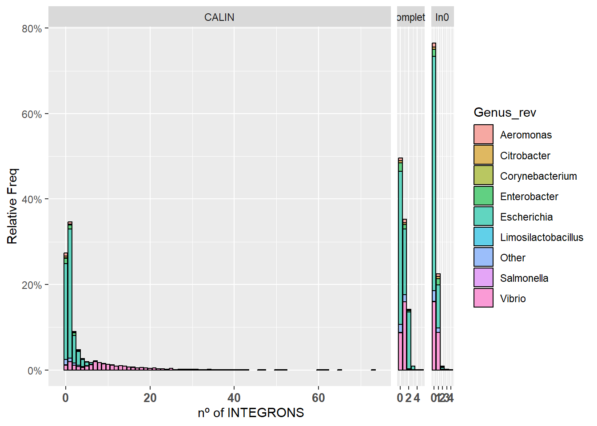

Warning: package 'rebus' was built under R version 4.3.3Integron Finder
Filtering
Previo al integron_finder hemos corrido otro script llamado integron_filtering para realizar un cribado preeliminar de nuestros genomas. Desde la consola de Linux ejecutamos primero el archivo integron_filtering.sh que, una vez terminada su función, activará otro archivo llamado genome_filter.py.
Files - Testing
Analizando resultados de integron_finder con R (prueba con 5 genomas aleatorios) :
- Obtenemos la lista de los archivos a analizar con
list_summary <- list.files(recursive=TRUE, pattern = "\\.summary$")
Creamos un df vacío para agregar los resultados
summary_df<-data.frame("Genome_ID" = c(NA), "CALIN" = c(NA), "complete" = c(NA), "In0" = c(NA))- La fila vacía la eliminaremos después de obtener todo los ressultados
summary_df <- summary_df %>% na.omit()(Paquete tidyverse)
- La fila vacía la eliminaremos después de obtener todo los ressultados
Hacemos un bucle for para leer todos los documentos de la lista:
Importante en
read.tableañadirskip=1para omitir la primera línea de texto yheader=Tpara que tod esté en su sitio.Para obtener el número de genoma, usamos la función
str_extract()(paquete stringr) con el patrónpattern = "G_[0-9]+"Por cada archivo, obtenemos un df temporal con su G_ID y la suma de cada columna con
sum(file$column)Añadidimos este df al creado anteriormente como una nueva fila con
summary_df[nrow(summary_df) + 1,] <- df_temp
- Al acabar el bucle, podemos eliminar el df_temp y el objeto de lectura para mantener el environment organizado
Abrimos los datos taxonómicos que se encuentran en
pipolin_summary_new.tsvy usamosmerge()para añadirlos a nuestro df- De pipolin_summary_new.tsv sólo nos interesant las columnas Genome_ID [3] y Genus_rev [34]
- Usaremos
stack()para obtener 2 columnas (Count e integron_type) con la que más tarde podremos dividir el gráfico en 3 (CALIN, complete e In0)
pipolin_summary <- read_tsv("pipolin_summary_new.tsv")
taxonomy_data <- pipolin_summary[,c(3,34,38:44)]
rm(pipolin_summary)
taxonomy_data <- taxonomy_data[,c(1,2)]
summary_df<-data.frame("Genome_ID" = c(NA), "CALIN" = c(NA), "complete" = c(NA), "In0" = c(NA))
list_summary <- list.files(recursive=TRUE, pattern = "\\.summary$")
for (k in 1:length(list_summary)){
summary <- read.table(list_summary[k], sep="\t", skip = 1, header = T)
G_ID <- str_extract(string = summary$ID_replicon[1], pattern = "G_[0-9]+")
df <- data.frame("Genome_ID" = c(G_ID), "CALIN" = c(sum(summary$CALIN)), "complete" = c(sum(summary$complete)), "In0" = c(sum(summary$In0)))
summary_df[nrow(summary_df) + 1,] <- df
}
rm(df, summary)
summary_df <- summary_df %>% na.omit()
merged_df <- merge(summary_df, taxonomy_data, by="Genome_ID")
stacked <- cbind(summary_df$Genome_ID,stack(summary_df[,2:4]),merged_df$Genus_rev)
names(stacked) <- c("Genome_ID","Count","Integron_type","Genus_rev")Plots - Testing
Hacemos un gráfico de barras con ggplot() que muestre en el eje x la cantidad de integrones y en el eje y en porcentaje de genomas que tienen esa cantidad de integrones:
Para evitar números decimales en el eje x podemos usar
scale_x_continuous(breaks=c(0,1,2)Los números en el vector breaks serán aquellos que aparezcan el la columna Count del df stacked
ggplot(stacked, aes(x=Count)) +
geom_bar(aes(y = after_stat(count)/(18462/3), fill = Genus_rev, alpha=0.1), stat = "count", col = "black", alpha = 0.6) +
facet_grid(.~Integron_type, scale="free",space="free") + scale_y_continuous(labels=scales::percent) + xlab("nº of INTEGRONS") + ylab("Relative Freq") +
theme(axis.text.x = element_text(angle = 0, hjust = 0.5, size = 10, face = "bold")) + scale_x_continuous()Files - Final
Estos datos fueron obtenidos con el ordenador del laboratorio, pero usando el mismo código que el que se empleó antes. Para reducir el tamaño del gráfico podemos usar el paquete rebus(). Así juntamos todos los valores mayores que 10 en uno que interpretaremos como “Más de 10 integrones”:
integron_summary <- read.csv("integron_summary.csv", stringsAsFactors = F)
new_summary <- integron_summary
interval <- number_range(11,100)Warning in char_range(d[1, 1], d[nrow(d), 1]): 'lo' and 'hi' are the same
value. Return 'lo'.new_summary$Count[which(grepl(interval,integron_summary$Count)==T)]<-11Plots - Final
Los gráficos que se muestran a continuación son 1.- Aquel que muestra toda la información al completo y 2.- Aquel en el que agrupamos todos los resutlados mayores que 10 en uno solo (>10).
ggplot(integron_summary, aes(x=Count)) +
geom_bar(aes(y = after_stat(count)/(18462/3), fill = Genus_rev, alpha=0.1), stat = "count", col = "black", alpha = 0.6) +
facet_grid(.~Integron_type, scale="free",space="free") + scale_y_continuous(labels=scales::percent) + xlab("nº of INTEGRONS") + ylab("Relative Freq") +
theme(axis.text.x = element_text(angle = 0, hjust = 0.5, size = 10, face = "bold")) + scale_x_continuous()
ggplot(new_summary, aes(x=Count)) +
geom_bar(aes(y = after_stat(count)/(18462/3), fill = Genus_rev, alpha=0.1), stat = "count", col = "black", alpha = 0.6) +
facet_grid(.~Integron_type, scale="free",space="free") + scale_y_continuous(labels=scales::percent) + xlab("nº of INTEGRONS") + ylab("Relative Freq") +
theme(axis.text.x = element_text(angle = 0, hjust = 0.5, size = 10, face = "bold")) + scale_x_continuous(breaks = c(0,1,2,3,4,5,6,7,8,9,10,11), labels = c("0","1","2","3","4","5","6","7","8","9","10",">10"))Session Info
R version 4.3.2 (2023-10-31 ucrt)
Platform: x86_64-w64-mingw32/x64 (64-bit)
Running under: Windows 11 x64 (build 22631)
Matrix products: default
locale:
[1] LC_COLLATE=Spanish_Spain.utf8 LC_CTYPE=Spanish_Spain.utf8
[3] LC_MONETARY=Spanish_Spain.utf8 LC_NUMERIC=C
[5] LC_TIME=Spanish_Spain.utf8
time zone: Europe/Madrid
tzcode source: internal
attached base packages:
[1] stats graphics grDevices utils datasets methods base
other attached packages:
[1] rebus_0.1-3 lubridate_1.9.3 forcats_1.0.0 stringr_1.5.1
[5] dplyr_1.1.4 purrr_1.0.2 readr_2.1.4 tidyr_1.3.0
[9] tibble_3.2.1 tidyverse_2.0.0 ggplot2_3.4.4
loaded via a namespace (and not attached):
[1] utf8_1.2.4 generics_0.1.3 stringi_1.8.2
[4] hms_1.1.3 digest_0.6.33 magrittr_2.0.3
[7] evaluate_0.23 grid_4.3.2 timechange_0.2.0
[10] fastmap_1.1.1 jsonlite_1.8.8 rebus.datetimes_0.0-2
[13] fansi_1.0.5 scales_1.3.0 cli_3.6.1
[16] rlang_1.1.2 crayon_1.5.2 bit64_4.0.5
[19] munsell_0.5.0 withr_2.5.2 yaml_2.3.7
[22] tools_4.3.2 parallel_4.3.2 tzdb_0.4.0
[25] colorspace_2.1-0 rebus.base_0.0-3 vctrs_0.6.4
[28] R6_2.5.1 lifecycle_1.0.4 htmlwidgets_1.6.3
[31] bit_4.0.5 vroom_1.6.4 pkgconfig_2.0.3
[34] pillar_1.9.0 gtable_0.3.4 glue_1.6.2
[37] xfun_0.41 tidyselect_1.2.0 rstudioapi_0.15.0
[40] rebus.numbers_0.0-1 knitr_1.45 farver_2.1.1
[43] htmltools_0.5.7 labeling_0.4.3 rmarkdown_2.25
[46] rebus.unicode_0.0-2 compiler_4.3.2